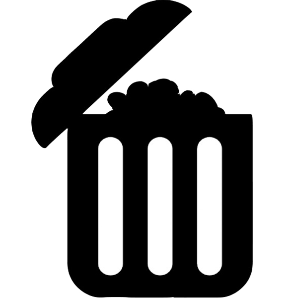

¿Qué es Trashure! ?
La basura de alguien es el tesoro de otro !
Trashure! es la pagina ideal para cuando tienes un objeto que no puedes o no quieres vender,
pero no quieres botarlo a la basura. Aquí podras publicar ese objeto y alguien que lo necesite te contactará, asi mismo,
tu puedes buscar algo y tener la posibilidad de que alguien quera regalarlo
